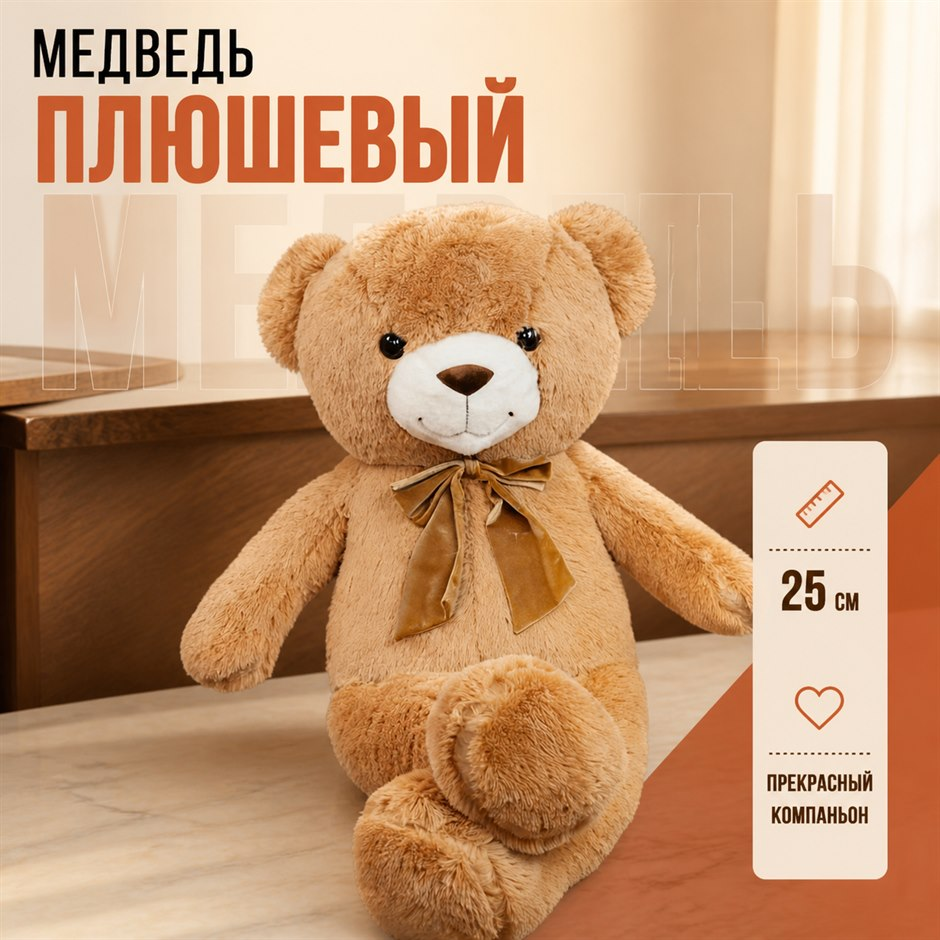
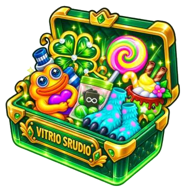

1
Забудь о найме фотографа
Не трать деньги на фотосессию своего товара, просто загрузи его и создай то, что всегда хотел!
Создать карточку товара для ВБ, Озон или Яндекс Маркета можно без фотосессии: загрузите фото — нейросеть соберёт фон, сцену и инфографику. Наш сервис работает безупречно и в этом убедились уже множество человек, попробуй и ты.

Форматы под площадки

Не трать деньги на фотосессию своего товара, просто загрузи его и создай то, что всегда хотел!
Создавайте и редактируйте изображения в одном месте, просто удобно и не требует ничего лишнего!
Все фотографии готовы к публикации, наша ИИ генерирует всё строго по правилам
Сервис работает очень просто, а главное уже завоевал доверие среди многих предпринимателей по всей стране
Короткий туториал — от загрузки фото до готового визуала.
Vitrio учитывает форму, упаковку, цвет, фактуру и ключевые детали товара.
Исходники, настройки и результаты остаются собраны в одном месте.
Один товар для карточки, баннера и вертикального контента.
Vitrio сам подбирает оптимальные параметры для сцены — без выбора модели.
Изображение без случайных цен, характеристик и рекламных надписей.
Опишите материал, поверхность, свет и композицию своими словами.
Крутите рулетку в нашем мини-приложении и получайте бонусные генерации, скидку на подписку или расширенный доступ к Vitrio Pro.
Предложение действует ограниченное время
Количество подарков ограничено. Один розыгрыш на аккаунт.

300 ₽/неделю
Для первых карточек, каталогов и регулярных быстрых итераций.
1000 ₽/неделю
Для продавцов, которым нужны сложные коммерческие сцены и больше контроля.
Карточка товара — единственное, что видит покупатель на маркетплейсе перед тем, как нажать «в корзину». Описание читает меньшинство, галерею листают почти все, поэтому от качества изображений напрямую зависит конверсия в заказ. Раньше, чтобы сделать карточку, продавцу приходилось выбирать между фотостудией, фрилансером и самостоятельной вознёй в редакторе — и каждый вариант упирался либо в деньги, либо во время. Сегодня появился четвёртый путь.
Принцип простой: вы загружаете обычное фото товара, снятое хоть на телефон, а нейросеть достраивает вокруг него всё остальное. Она убирает фон, подставляет подходящее окружение, выставляет свет и собирает изображение под требования площадки. Создать карточку товара с помощью нейросети получается за минуты, без навыков дизайна и без съёмочного оборудования.
Важно, чем такой сервис отличается от универсальных генераторов вроде Midjourney. Те рисуют картинку с нуля по описанию и вашего товара никогда не видели — они нарисуют похожий предмет, но не ваш. Нейросеть для карточек товара отталкивается именно от вашей фотографии и сохраняет форму, упаковку, цвет и фактуру. Для маркетплейса это принципиально: покупатель должен получить то, что видел в галерее.
Порядок действий одинаков для всех площадок. Ниже — как сделать карточку товара для маркетплейса от съёмки до выгрузки в личный кабинет.
Механика для Вайлдберриз ничем не отличается: сгенерированные изображения загружаются в карточку через личный кабинет продавца так же, как обычные фотографии. Отличаются только требования к самим файлам — соотношение сторон, минимальное разрешение, вес и допустимое количество изображений. ВБ их периодически меняет, поэтому перед загрузкой сверяйтесь с актуальной справкой площадки: это единственный надёжный источник.
Многие продавцы ведут ассортимент сразу на нескольких площадках и ищут, как создавать карточки ВБ и Озон одновременно. Здесь у генерации есть заметное преимущество перед студией: один загруженный товар используется для карточки, баннера и вертикального контента, а форматы готовятся под конкретную площадку.
Для Озон и Яндекс Маркета всё устроено аналогично. Разница снова в технических требованиях к файлам и в том, какие блоки инфографики привычны покупателю конкретной площадки. Сам процесс — загрузили фото, получили набор изображений, выгрузили — одинаков везде.
Инфографика — это изображения в галерее, на которые поверх фото нанесены текст, иконки, размеры и сценарии использования. Именно она отвечает на вопросы покупателя раньше, чем он успеет их задать и уйти к конкуренту. Отдельная инфографика для каждой позиции — самая утомительная часть работы: макет один и тот же, меняются только фото и цифры.
Эту рутину генерация снимает целиком. Но текст на макете всё равно проверяйте вручную: состав, размеры и характеристики должны совпадать с тем, что указано в карточке. Расхождение ведёт к возвратам и вопросам от площадки.
Запрос «нейросеть для карточек товара бесплатно» — один из самых частых, и ответ на него честный, но не самый приятный. Полностью бесплатные инструменты существуют, но у них либо жёсткие лимиты на число генераций, либо водяные знаки, либо низкое разрешение на выходе — для реальной работы с ассортиментом этого не хватает.
У Vitrio бесплатного тарифа нет. Есть пробный период: первые 3 дня стоят 1 ₽, дальше подписка от 300 ₽ в неделю без ограничения по числу товаров. Логика в том, что за рубль можно прогнать свои реальные позиции и понять, ложится ли формат на вашу категорию, до того как платить полную цену.
Заработок на карточках товара — отдельная история: их делают не себе, а на заказ. Спрос на это устойчивый: у большинства мелких продавцов нет ни дизайнера, ни времени. Раньше порогом входа был Photoshop и месяцы практики, сейчас — умение снять товар и собрать вменяемый макет.
Экономика тут строится на скорости: заказчик платит за карточку, а ваши затраты — это подписка, не зависящая от их количества. Чем больше позиций вы прогоняете за месяц, тем ниже себестоимость одной. Именно поэтому сервисы с подпиской выгоднее фрилансеру, чем поштучная оплата инструментов.
Для премиальных и имиджевых позиций классическая съёмка всё ещё даёт более достоверный результат. На практике чаще всего комбинируют: главное фото снимают сами или в студии, а инфографику, баннеры и дополнительные ракурсы собирают генерацией.
Словом «карточка товара» называют две разные вещи. Здесь речь про изображения для витрины маркетплейса. Если вам нужно завести карточку товара в Честном Знаке, Национальном каталоге или в 1С — это про маркировку и учёт, инструкции ищите в справке соответствующей системы, наш сервис такую задачу не решает.
Первые 3 дня доступ стоит 1 ₽. Дальше действует подписка: тариф Vitrio Start — 300 ₽ в неделю, Vitrio Pro — 1000 ₽ в неделю. Стоимость привязана к периоду подписки, а не к количеству товаров.
Нет. Достаточно фото с телефона, снятого при нормальном освещении и на спокойном фоне. Чем чище исходный кадр, тем лучше результат — снимайте днём у окна и без пёстрого фона позади товара.
Да, механика создания карточки одинакова для всех площадок, а форматы готовятся под конкретную площадку. Требования к самим файлам у маркетплейсов отличаются и периодически обновляются, поэтому перед загрузкой стоит сверяться с их актуальной справкой.
Полностью бесплатные инструменты существуют, но у них жёсткие лимиты на число генераций, водяные знаки или низкое разрешение — для работы с реальным ассортиментом этого не хватает. У Vitrio бесплатного тарифа нет: первые 3 дня стоят 1 ₽, дальше подписка от 300 ₽ в неделю.
Так же, как обычные фотографии: сгенерированные изображения загружаются в карточку через личный кабинет продавца. Отличаются только требования к файлам — соотношение сторон, разрешение, вес и количество изображений. ВБ их периодически меняет, сверяйтесь с актуальной справкой площадки.
Да, спрос устойчивый: у большинства мелких продавцов нет ни дизайнера, ни времени. Экономика строится на скорости — заказчик платит за карточку, а ваши затраты это подписка, не зависящая от их количества. Чем больше позиций прогоняете за месяц, тем ниже себестоимость одной.
Vitrio отталкивается от вашей фотографии и учитывает форму, упаковку, цвет и фактуру товара — в отличие от универсальных генераторов, которые рисуют похожий предмет с нуля. Итоговое изображение всё равно стоит просмотреть глазами: соответствие картинки реальному товару — требование всех площадок.
Да. Кроме фотографий товара сервис собирает баннеры и инфографику, а один загруженный товар можно использовать сразу для карточки, баннера и вертикального контента.